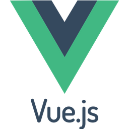
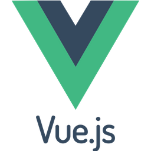
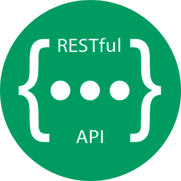
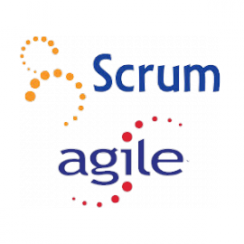
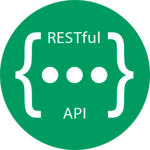
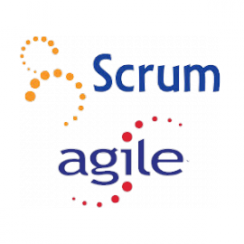

Hello, welcome to my portfolio website.
My most recent work experience includes 10 1/2 years as a Project Manager in the Building Automation Industry. I was initially hired by Siemens Industry in the state of Alaska as an Engineering Specialist. In this position I was working on small projects where I was responsible for system engineering, system programming and startup, and running the projects from start to finish. After gaining experience in these areas, I moved into a Project Manger role where I was eventually given responsibility for managing my companies projects for the two largest hospital campuses in Alaska.
In 2019, my wife and I decided to move our family from Alaska to Idaho, and about a year after moving to Idaho, I decided to pursue a career in Software Development. At that time, I enrolled in the Spring 2021 CodeWorks Full Stack Software Development bootcamp. Since successfully completing the CodeWork bootcamp, I have continued to work on developing my programming skills and gaining a deeper understanding of software development.
As I continue to pursue a career in Software Development, I am confident that my years of experience building good relationships, while managing technically complex Building Automation projects, along with my Full Stack Software Development skills, will make me a good addition to any company that is looking for a software developer who will be a good team player and help strengthen relationships with customers.
Thanks for giving me the chance to introduce myself. I hope you will continue look around my portfolio website. I'm excited to continue learning and improving my skills. My contact info is included below and I would love to hear from you if you have any software development job opportunities for me to check out.


Scott Miller
- Boise, Idaho
- Scott@SoftwareDesign.tech
Full Stack Software Developer eager to learn new new skills, languages, and technologies. Hard working team player, excited to launch a new career in software development.
Accurate Airflow
- Assistant Air Balancer
- Sep 2021 - present
- Assist with HVAC air flow measurements and adjustments.
CodeWorks Boise
- Software Development Student
- Spring 2021
- Immersive full stack software development program introducing students to software application creation using technologies such as HTML, CSS, Bootstrap, JavaScript, Vue.js, Node.js, C#, MySQL, MongoDB, Restful APIs, and Agile/Scrum methods.
Stonehill Church
- Setup/Teardown Crew Member
- May 2021 - present
- Equipment setup and teardown for Stonehill events.
CodeCademy
- Online Software Development Student
- Dec 2020 - present
- Currently working through the Full Stack Engineer path and individual courses on Vue.js, JavaScript, and other subjects.
Siemens Industry, Inc.
- Project Manager
- 2014 - 2020
- Project management load was 15 to 30 projects at a time, totaling between 2 and 4 million in revenue per year.
- One of the most requested project managers by customers.
Siemens Industry, Inc.
- Building Automation Engineering Specialist
- 2010 - 2014
- Responsibilities included building automation system design, field technician work, and project management on multiple small projects.
- Responsible for projects totaling about 1 to 2 million in revenue per year.
- Recognized for excellent customer and fellow employee relationships.
 



 


